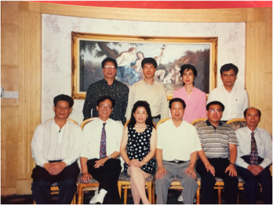
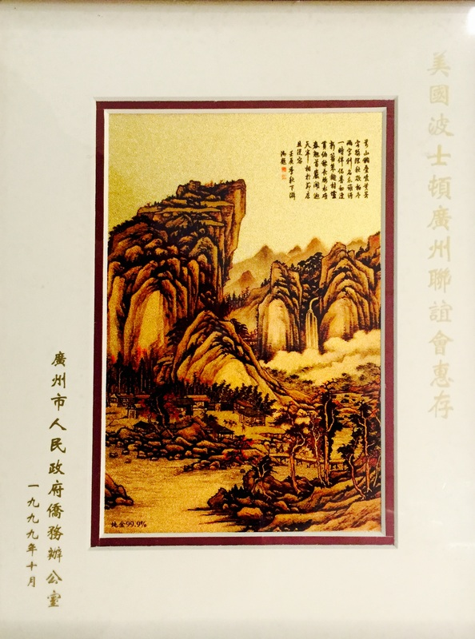
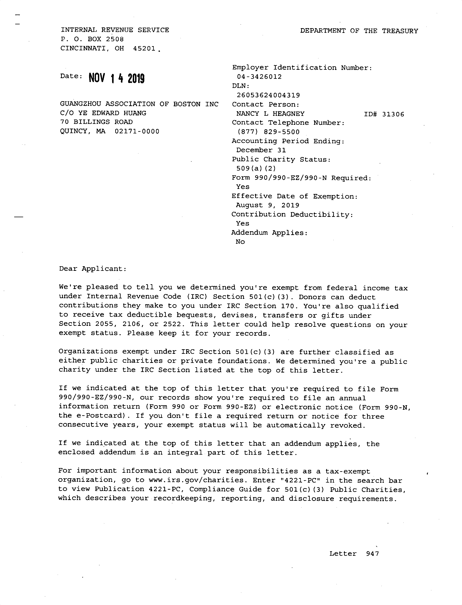

About Us
Since its establishment in September 1998, the Boston Guangzhou
Association, under the leadership of its first president, Zhang Fuquan, and other presidents,
has made outstanding contributions to the Boston Chinese community and played a positive role in
promoting the development of cultural exchanges between China and the United States.
In line with the development needs of The Times, the founding elders of the older generation
handed over the entire organization to the second-generation core management team, hoping to
further promote and develop the organization and create new glories.
We will carry forward the fine traditions of our predecessors, listen to their meticulous
guidance, actively carry out work on the existing basis, broaden our horizons, keep pace with
The Times, strive for support and understanding from all aspects, and develop our association
into a grassroots organization with influence that serves the overseas Chinese community.

To expand the conference affairs, we will formulate five major characteristics as our future action guidelines:
Inclusiveness
All members must comply with U.S. laws. People of different religions, beliefs, and ethnic backgrounds are welcome to join, as long as they abide by the Association's bylaws, pay their membership dues on time, and do not promote religious beliefs within the Association.
Non-Regionalism
In addition to members from Guangzhou, we welcome individuals from other regions, including Mainland China, Taiwan, Hong Kong, Macau, the United States, and other countries and regions, who share our vision and values.
Mutual Support
We welcome talented individuals from all walks of life to join us. If any member faces difficulties and needs assistance, we will promote a spirit of mutual aid, fully embodying the principle of "when one is in trouble, all sides come to help," thereby strengthening our unity and cohesion.
Neutrality
The Association is a non-profit and non-political organization. It does not participate in any political parties, religious groups, or community disputes. Our sole focus is on community development and genuinely serving our members by addressing their needs and concerns.
Outreach
CWhile we will continue to strengthen cultural and economic exchanges with Guangzhou, we also aim to collaborate with visionary individuals and organizations from all over the world to promote friendship and mutual understanding.


Who We Are
The Guangzhou Association of Boston is a non-profit social organization. All members are enthusiastic individuals. No matter what social status they reach in the United States, as long as they have the spirit and aspiration of selfless dedication, they are all welcome to us.
-
Our History
In 1997, Hong Kong returned to China. This is a historic and epoch-making event. After more than a year of preparation, taking advantage of the favorable conditions when overseas Chinese in Boston were establishing new associations one after another to contribute to the gradually warming relations between China and the United States, the Boston Guangzhou Association was born in September 1998. Up to now, it has gone through more than ten years. Through the concerted efforts of all colleagues in this association, contributions have been made in the Boston Chinese community.